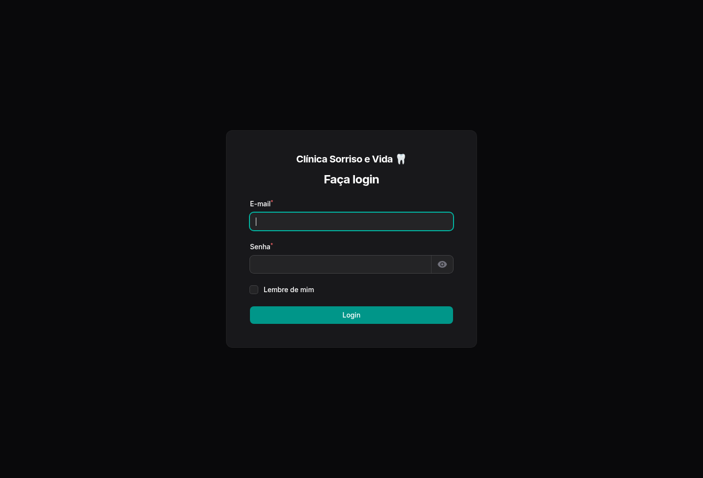
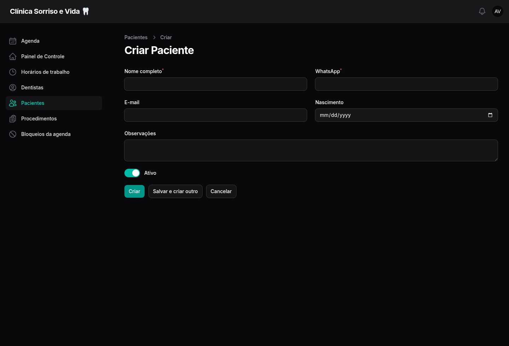
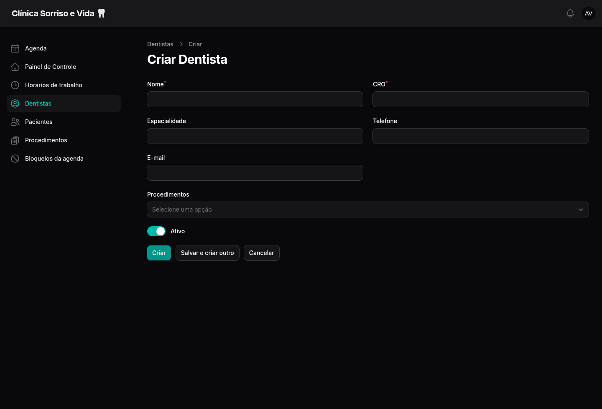
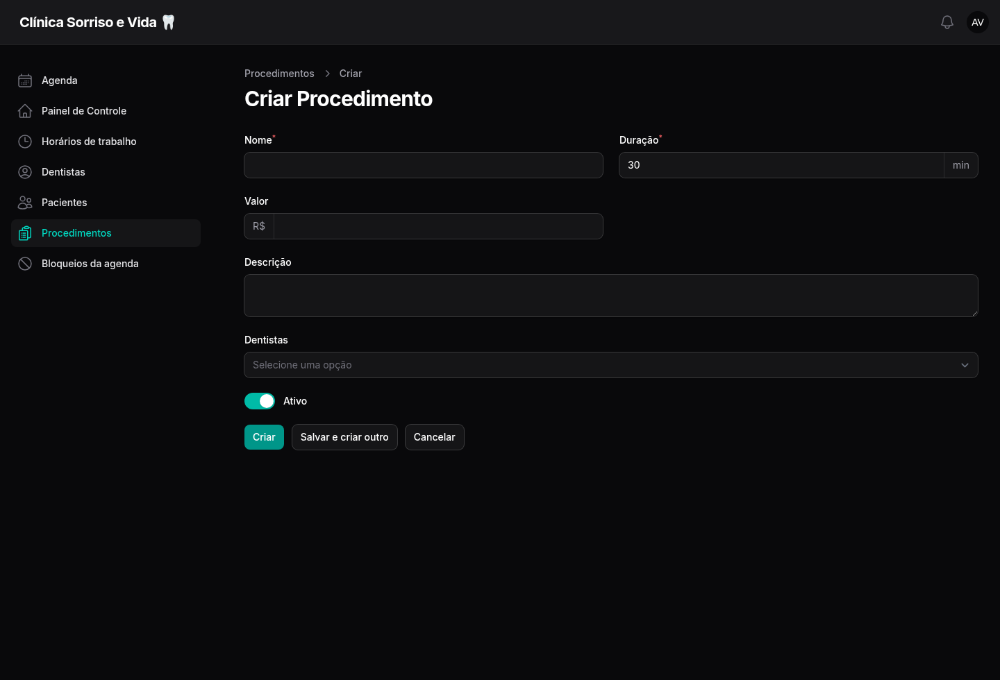
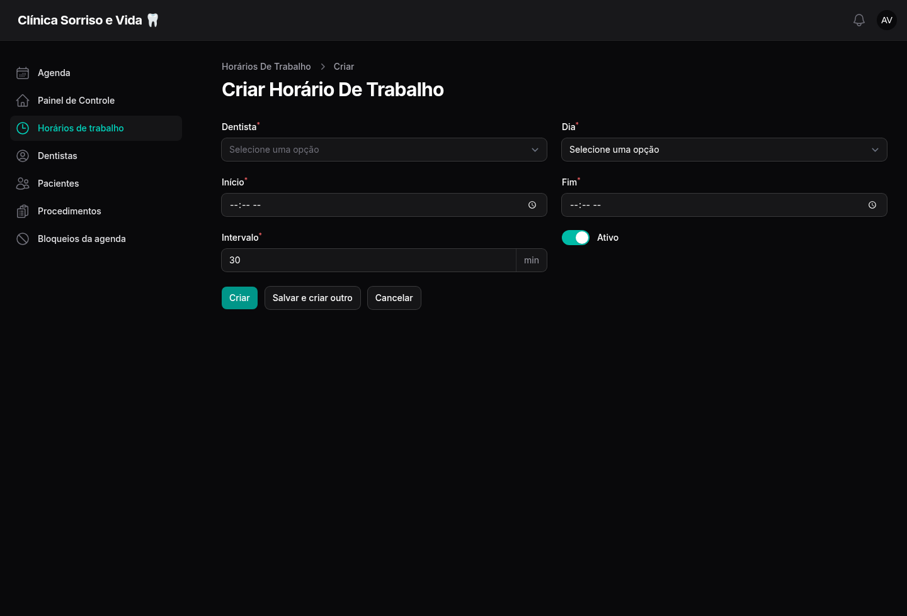
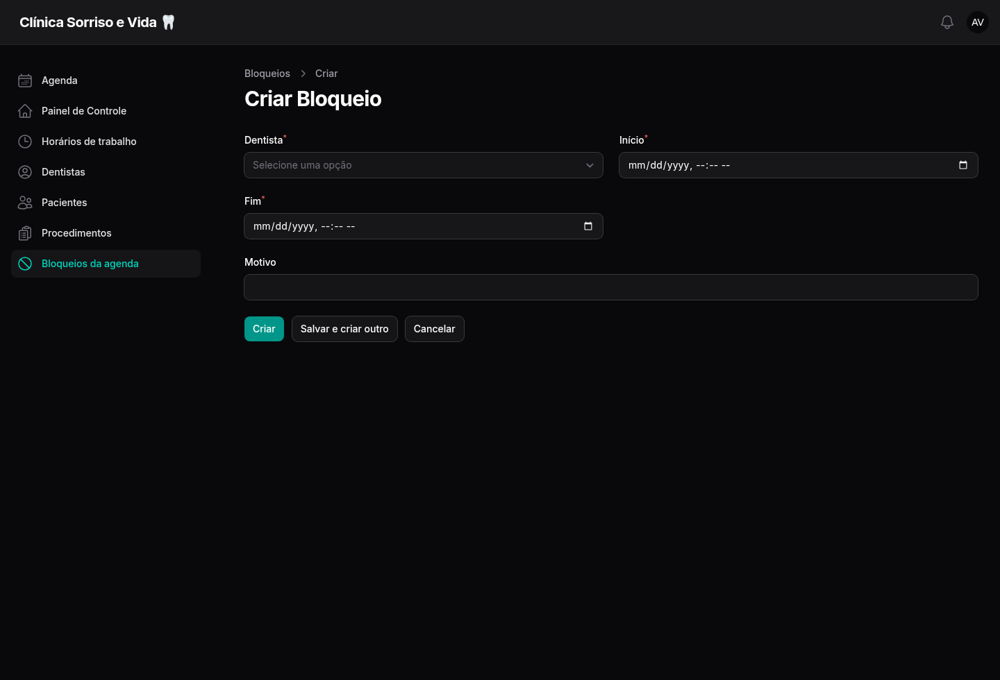
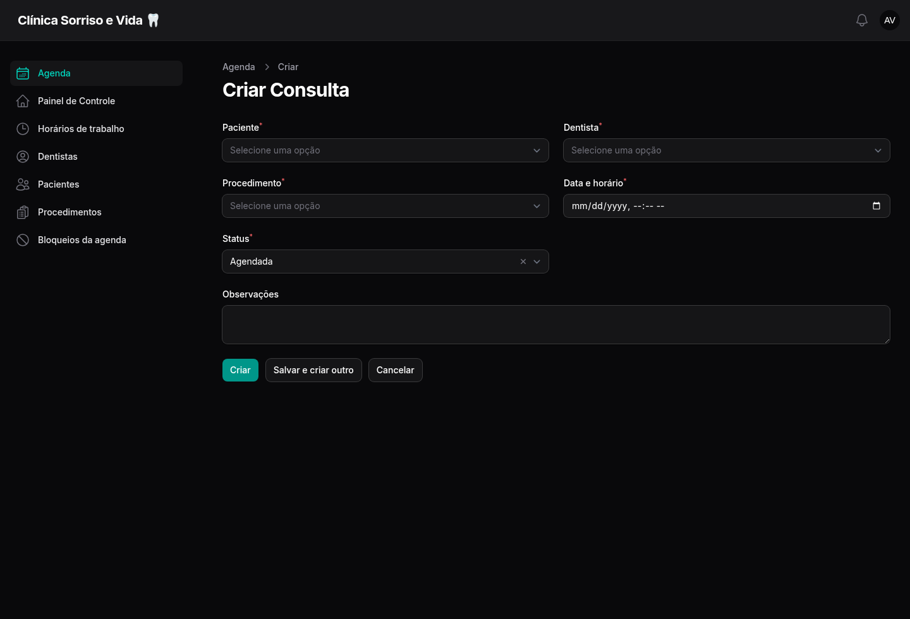
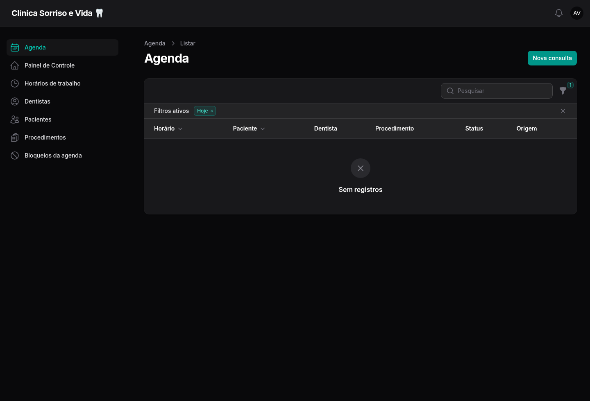

Um guia simples, visual e campo por campo para configurar a agenda, atender no dia a dia e orientar o paciente.
Siga a ordem indicada na primeira configuração. Depois, use as páginas de consulta rápida no trabalho diário.
Cadastre profissionais, procedimentos e horários de atendimento.
A recepção cria e acompanha consultas pelo painel.
O paciente agenda, consulta, cancela e reagenda pelo WhatsApp.

Tela de entrada do painel| Campo | O que preencher |
|---|---|
| O e-mail administrativo entregue pelo responsável do sistema. | |
| Senha | A senha correspondente. Use o ícone de olho para conferir a digitação. |
| Lembre de mim | Marque somente em computador particular e protegido da clínica. |
Consultas de hoje: total do dia, sem contar canceladas.
Confirmadas: pacientes que já confirmaram.
Concluídas: atendimentos finalizados.
Canceladas ou faltas: ocorrências que exigem atenção.
O paciente pode surgir automaticamente ao mandar mensagem ao bot. A recepção também pode cadastrá-lo manualmente.

Formulário “Criar Paciente”| Campo | Como preencher | Para que serve |
|---|---|---|
| Nome completo | Nome e sobrenome, sem apelidos. | Identifica o paciente na agenda e nas mensagens. |
| Número com DDD. Evite espaços e números duplicados. | Liga a conversa do bot ao cadastro correto. | |
| Preencha se o paciente informar. | Dado de contato complementar. | |
| Nascimento | Selecione a data no calendário. | Ajuda na identificação do paciente. |
| Observações | Informações administrativas úteis. Seja breve. | Apoio interno da recepção. |
| Ativo | Deixe ligado para permitir uso normal do cadastro. | Desligado, o bot orienta o paciente a procurar a recepção. |
Cada profissional precisa estar ativo e vinculado aos procedimentos que realiza.

Formulário “Criar Dentista”| Campo | Como preencher |
|---|---|
| Nome | Nome profissional que o paciente verá, por exemplo: Dra. Ana Souza. |
| CRO | Registro profissional completo e único, por exemplo: CRO-RR 1234. |
| Especialidade | Área de atuação mostrada no bot, como “Clínica geral” ou “Ortodontia”. |
| Telefone / E-mail | Contatos internos do profissional. São opcionais. |
| Procedimentos | Selecione todos os atendimentos que este dentista pode realizar. |
| Ativo | Ligado: pode aparecer no bot e receber consultas. Desligado: fica indisponível para novos agendamentos. |
Aqui você define o que pode ser agendado, quanto tempo ocupa e quais profissionais atendem.

Formulário “Criar Procedimento”| Campo | Como preencher | Efeito na agenda |
|---|---|---|
| Nome | Nome claro para o paciente, como “Avaliação odontológica”. | Aparece na lista do bot e na agenda. |
| Duração | Tempo total em minutos. Mínimo: 5. | Reserva esse período e evita choque com outra consulta. |
| Valor | Digite apenas o número; use centavos se necessário. | Quando vazio, a lista mostra “Sob consulta”. |
| Descrição | Resumo interno do atendimento. | Ajuda a equipe a diferenciar serviços parecidos. |
| Dentistas | Marque quem realiza o procedimento. | Define os profissionais oferecidos pelo bot. |
| Ativo | Deixe ligado enquanto o serviço puder ser marcado. | Desligado, some das novas opções do bot. |
Cadastre os períodos fixos em que cada dentista atende. Use mais de uma linha para separar manhã e tarde.

Formulário “Criar Horário de Trabalho”| Campo | Como preencher |
|---|---|
| Dentista | Escolha o profissional deste expediente. |
| Dia | Selecione o dia da semana, de segunda a domingo. |
| Início | Hora em que o primeiro atendimento pode começar. |
| Fim | Hora em que o período termina. O procedimento precisa acabar até esse horário. |
| Intervalo | De quantos em quantos minutos o sistema cria uma opção de início. Ex.: 30 min gera 08:00, 08:30, 09:00… |
| Ativo | Ligado inclui esse período na agenda; desligado o mantém cadastrado, mas indisponível. |
Crie segunda, 08:00–12:00 e depois outra linha segunda, 14:00–18:00. Repita nos demais dias.
Intervalo define os possíveis inícios. Duração vem do procedimento e define quanto tempo será ocupado.
Use bloqueios para férias, almoço fora do padrão, reunião, manutenção ou qualquer período sem atendimento.

Formulário “Criar Bloqueio”| Campo | Como preencher |
|---|---|
| Dentista | Selecione quem ficará indisponível. |
| Início | Data e hora exatas em que começa a indisponibilidade. |
| Fim | Data e hora exatas em que termina. Deve ser posterior ao início. |
| Motivo | Descrição curta para a equipe, como “Férias”, “Reunião” ou “Manutenção”. |
O período deixa de aparecer como livre para novos agendamentos.
O bloqueio não substitui o contato com pacientes que já estejam na agenda daquele período.
Abra o bloqueio na lista para ajustar datas ou liberar novamente o horário.
Antes de agendar, confirme que o paciente já está cadastrado.

Formulário “Criar Consulta”| Campo | Como preencher |
|---|---|
| Paciente | Pesquise pelo nome ou WhatsApp e selecione o cadastro correto. |
| Dentista | Escolha um profissional ativo. |
| Procedimento | Escolha um serviço ativo e realizado pelo dentista selecionado. |
| Data e horário | Informe o início da consulta. O sistema verifica expediente, duração, bloqueios e conflitos. |
| Status | Normalmente deixe Agendada. Use outro estado somente se representar a situação real. |
| Observações | Recado administrativo breve para a equipe. |

Lista de consultas e filtrosO paciente só precisa mandar uma mensagem de texto para o WhatsApp conectado à clínica.
menu oi olá início iniciar
Qualquer uma delas reinicia a conversa e mostra as quatro opções.
| Mensagem | O que acontece |
|---|---|
| ajuda | Mostra uma explicação curta dos comandos. |
| status / consultas / minhas consultas | Lista as próximas consultas agendadas ou confirmadas. |
| confirmar | Confirma a próxima consulta futura do paciente. |
| sair / parar / cancelar | Encerra o fluxo atual. Para voltar, basta digitar “menu”. |
O paciente envia 1. Se for o primeiro contato, o bot pede o nome completo.
O bot lista apenas procedimentos ativos, junto com a duração.
Aparecem somente dentistas ativos e vinculados ao procedimento.
Digite, por exemplo, 15/10/2026. A data precisa estar dentro do período permitido.
O bot mostra somente horários livres. Responda com o número, não com a hora digitada.
Revise procedimento, profissional, data e hora. Envie sim para gravar.
Mostra as consultas futuras que estejam Agendadas ou Confirmadas, em ordem de data.
Também funciona digitando “status” ou “consultas”.
O paciente escolhe uma consulta da lista e responde sim para confirmar o cancelamento.
A consulta fica no histórico como Cancelada.
O paciente escolhe a consulta, informa nova data, seleciona um horário livre e confirma.
Mantém profissional e procedimento da consulta original.
Informa data, horário, procedimento e dentista. Orienta o paciente a responder confirmar ou digitar menu para alterar.
Reforça os dados da consulta e orienta a usar o menu se for necessário alterar.
O dentista precisa realizar o procedimento selecionado.
O atendimento inteiro precisa caber em um horário de trabalho ativo.
Férias, reuniões e outros bloqueios retiram o período da lista.
Consultas agendadas, confirmadas ou em atendimento ocupam o horário.
A configuração padrão permite agendar com pelo menos 2 horas de antecedência e até 90 dias à frente.
| Sintoma | O que conferir no painel |
|---|---|
| Procedimento não aparece | Se está ativo. |
| Dentista não aparece | Se está ativo e vinculado ao procedimento. |
| Data sem horários | Horário de trabalho, duração, bloqueios, consultas existentes e antecedência mínima. |
| Paciente não consegue agendar | Se o cadastro do paciente está ativo. |
Faça este teste com um número autorizado e uma data futura livre. Marque cada item somente depois de conferir no painel.
1. Login: entre no painel com e-mail e senha administrativos.
2. Dentista: confirme nome, CRO, status Ativo e procedimento vinculado.
3. Procedimento: confirme duração, status Ativo e dentista selecionado.
4. Horário: crie um período de trabalho no dia que será usado no teste.
5. Bot: envie menu no WhatsApp e confira as quatro opções.
6. Agendamento: escolha 1, informe nome (se solicitado), procedimento, dentista, data e horário; responda sim.
7. Painel: abra Agenda, retire/ajuste o filtro Hoje se necessário e confirme que a consulta aparece com origem WhatsApp.
8. Status: envie status e confira se os mesmos dados aparecem no WhatsApp.
9. Confirmação: envie confirmar e confira o status Confirmada no painel.
10. Reagendamento: use opção 4, escolha nova data e horário e confirme a mudança no painel.
11. Cancelamento: use opção 3 e confira se a consulta fica Cancelada no histórico.
12. Bloqueio: crie um bloqueio de teste e confirme que aquele período não é oferecido.
Bot e painel mostram os mesmos dados, não existe sobreposição e os estados mudam corretamente.
Anote o horário, o número usado, a mensagem recebida e tire uma captura da tela. Isso acelera o diagnóstico técnico.
Novo paciente:
Pacientes › Criar
Nova consulta:
Agenda › Nova consulta
Folga ou férias:
Bloqueios da agenda › Criar
Mudar expediente:
Horários de trabalho › Editar
Abrir menu: menu
Ver próximas: status
Confirmar a próxima: confirmar
Interromper: sair
Orientação: ajuda
Dentista e procedimento estão ativos e vinculados?
Existe horário de trabalho naquele dia?
A duração cabe antes do fim do expediente?
Há bloqueio ou outra consulta no período?
A data respeita antecedência e limite futuro?
O paciente está com o cadastro ativo?
Comece pela página 15, siga o roteiro completo e use esta folha como apoio no dia a dia.
Clínica Sorriso e Vida • Painel de agendamentos e bot no WhatsApp • Manual versão 1.0